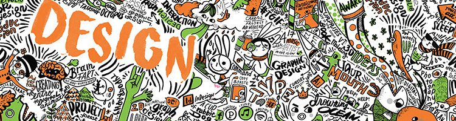
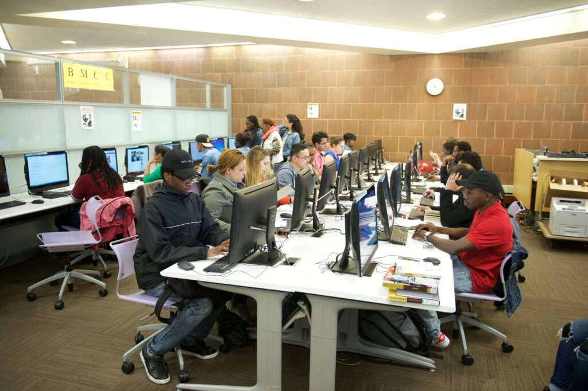

New York City College Of Technology
Program: Communication Design
Degree: Bachelor of Fine Arts
The BFA degree develops students' abilities to frame, research and solve increasingly complex visual communication problems. Students develop a professional portfolio that prepares them for employment as art directors, graphic designers, illustrators and web designers.
View Program

Queens College
Program: Design
Degree: Bachelor of Fine Arts
Queens College’s Design program combines knowledgeable faculty with industry standard software and the creativity of a studio-based learning environment. Students choose one of three concentrations: Communication Design, Animation & Illustration or Interaction Design.
View Program

The City College of New York
Program: Electronic Design and Multimedia
Degree: Bachelor of Fine Arts
The Electronic Design & Multimedia prepares students for careers in design in traditional print and emerging electronic media. It offers one of the most comprehensive, affordable 4-year programs in electronic art at a New York City public university, and has a 18-year record of alumni success.
View Program

York College
Program: Communication Technology
Degree: Bachelor of Science
An interdisciplinary program that brings together television, web, information systems, computer science, and design. The program offers three main concentrations: digital video, computer graphics, and systems and applications.
View Program
Lehman College
Program: Computer Graphic and Imaging
Degree: Bachelor of Science
The Computer Graphics and Imaging program offers courses covering web design, imaging, 3-D modeling, animation, interactivity, and broadcast design, preparing students for careers as well as graduate study in these fields.
View Program
Baruch College
Program: Graphic Communication
Degree: Bachelor of Arts
The graphic communication specialization provides training in graphics as well as basic training in the broader aspects of business communication. It prepares the graphic artist to enter a business environment.
View Program